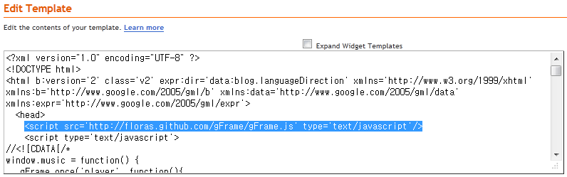
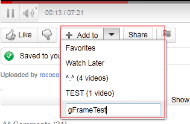
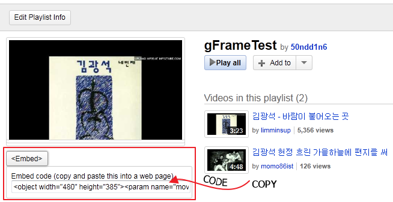

I. Blogger & Youtube playerlist
There is
a conflict between gFrame and 'followers' gadget in the Blogger.
You have to remove that gadget. (Design > Page Elements)
DEMO BLOG :
http://50ndd1n6.blogspot.com/
1. Insert gFrame script

Add one line. It should be declared as a first <script> element in the <head> element.
(Blogger template require script tag to be empty element. Other sites should be end with </script>)
<script src='http://floras.github.com/gFrame/gFrame.js' type='text/javascript'/>
2. Create playlist and get the source code from youtube


If you don't know where playlist is.
Log in youtube and click this (
http://www.youtube.com/view_all_playlists)
Choose your playlist and copy the source code
3. write code
window.music = function() {
gFrame.once('player', function(){
var code = '<embed src="http://www.youtube.com/p/8B2C3091F8C77A5F?hl=en_US&fs=1&autoplay=1&loop=1" type="application/x-shockwave-flash" width="100%" height="100%" allowscriptaccess="always" allowfullscreen="true"></embed>';
gFrame('player', code, {top:10, left:10, width:240, height:185, style:'border:3px solid #f00'}).hide();
});
};
music();
Check the script
- If you dont want remove the player, 1~2line and 5~7line would be removed.
- 'gFrame.once' is for on/off player.
- Change value of src (www.youtube.com/p/8B2C3091F8C77)
- '.hide()' makes play in the background
- If you need opacity of the flash. add 'wmode="transparnent" in the 'embed' element.
- autoplay : autoplay=1, loop : loop=1 check this
- Check the option : top, left, right, bottom, width, height, style
- Line 7, Excute the code. If you don't want play immediately, delete this line.
4. Insert code into the template
<?xml version="1.0" encoding="UTF-8" ?>
<!DOCTYPE html>
<html b:version='2' class='v2' expr:dir='data:blog.languageDirection' xmlns='http://www.w3.org/1999/xhtml' xmlns:b='http://www.google.com/2005/gml/b' xmlns:data='http://www.google.com/2005/gml/data' xmlns:expr='http://www.google.com/2005/gml/expr'>
<head>
<script src='http://floras.github.com/gFrame/gFrame.js' type='text/javascript'/>
<script type='text/javascript'>
//<![CDATA[
if(window.gFrame&&gFrame.alive) {
window.music = function() {
gFrame.once('player', function(){
var code = '<embed src="http://www.youtube.com/p/8B2C3091F8C77A5F?hl=en_US&fs=1&autoplay=1&loop=1" type="application/x-shockwave-flash" width="100%" height="100%" allowscriptaccess="always" allowfullscreen="true"></embed>';
gFrame('player', code, {top:10, left:10, width:240, height:185, style:'border:3px solid #f00'}).hide();
});
};
music();
}
//]]>
</script>
.......
5. Do you need button ?
<button onclick="gFrame.once.remove('player');gFrame.content.music();">PLAY</button>
<button onclick="gFrame.remove('player')">STOP</button>
<button onclick="gFrame.show('player')">SHOW</button>
<button onclick="gFrame.hide('player')">HIDE</button>